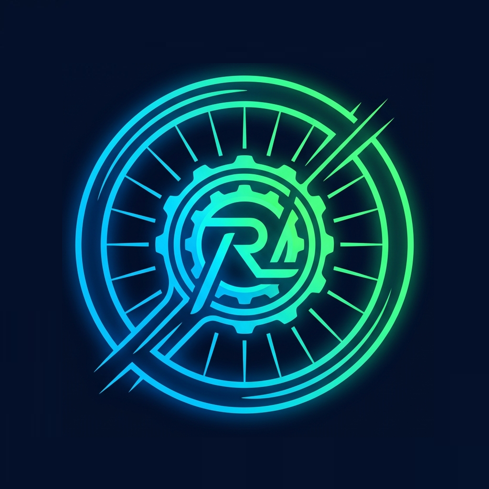

¿Para qué sirve?
Permite registrar velocidad, distancia, potencia, cadencia, pulso, desnivel y tiempo durante el entrenamiento.
Los datos se guardan en este navegador y se asocian al perfil activo.

TRAINING LAB
Cargando perfiles...
Entrenamiento con simulador de ruta. Carga un archivo GPX/TCX y el rodillo cambiará la resistencia automáticamente.
Controla la resistencia de tu rodillo inteligente de manera manual usando botones de pendiente.
Entrenamientos estructurados por potencia objetivo (% FTP / W). Carga archivos .zwo o .erg y el rodillo ajustará la resistencia automáticamente.
Para rodillo no inteligente. Lee y registra la información de tus sensores externos (Vel/Cad/Pot) en tiempo real.
Elige una ruta para preparar tu próxima sesión. Las favoritas aparecen primero.
Elige un entrenamiento de la biblioteca o importa tus propios archivos .zwo o .erg. El rodillo ajustará automáticamente la resistencia en cada bloque.
Define bloques de potencia; el perfil se actualiza mientras editas.
RodilloInt es una aplicación web para entrenar en interior, simular rutas y guardar la evolución de tus sesiones.
Permite registrar velocidad, distancia, potencia, cadencia, pulso, desnivel y tiempo durante el entrenamiento.
Los datos se guardan en este navegador y se asocian al perfil activo.
Nueva sesión: carga un GPX/TCX y sigue la ruta con el cambio automático de pendiente.
Sesión manual: entrena sin ruta y ajusta pendiente o potencia.
Entrenamiento ERG: sigue bloques estructurados de potencia; con un rodillo compatible conectado, la app ajusta la resistencia al objetivo.
Rodillo tradicional: registra los sensores sin controlar la resistencia.
Rodillo Virtual: prueba la aplicación sin sensores físicos.
En Entrenamientos ERG puedes elegir un entrenamiento predefinido, importar archivos .zwo (Zwift) o .erg/.mrc (Computrainer), o crear uno propio.
El editor permite añadir bloques y grupos repetidos, definir duración, potencia en % FTP o vatios y consultar el perfil antes de guardarlo.
Puedes editar tus entrenamientos personalizados o copiar uno para modificar la copia; los predefinidos permanecen intactos. También puedes exportar tus entrenamientos personalizados a ZWO.
Selecciona el entrenamiento y prepara la sesión. Durante el entrenamiento verás el bloque actual, el siguiente, el tiempo restante y tu potencia frente al objetivo. Al finalizar, el resumen muestra la adherencia al objetivo cuando hay lecturas de potencia.
En ⚙️ Ajustes puedes elegir el mapa 2D/3D aéreo/FPV, la orientación Norte/Ruta, el diseño de pantalla y el tamaño del texto. En FPV, la cámara sigue el recorrido; puedes ajustar el zoom con los controles o las teclas + y −.
También puedes configurar marchas virtuales, límites de pendiente, realismo, suavizado de sensores, zonas de potencia, el inicio al detectar movimiento y mostrar el fantasma de tu mejor sesión anterior en rutas.
La ficha Progreso Ruta muestra lo recorrido, lo restante y el desnivel. Prox 500m sirve de referencia para la pendiente próxima.
Puedes pausar, reanudar, finalizar y cambiar de marcha desde la pantalla. En rutas, la sesión puede pausarse automáticamente si deja de detectar movimiento y reanudarse al volver a pedalear. La distancia y la velocidad media se calculan con el tiempo activo.
Los indicadores superiores muestran conexión y recepción reciente: el contorno naranja avisa si un sensor conectado lleva más de cinco segundos sin enviar datos.
Desde el historial puedes consultar sesiones, repetir rutas, renombrarlas y exportarlas a CSV. La pantalla Progreso muestra la evolución acumulada del perfil.
En Ajustes puedes descargar el backup completo, exportar perfiles, historial, una sesión o la telemetría CSV. También puedes activar la descarga automática al finalizar cada sesión o guardar un backup desde el resumen.
El backup completo incluye perfiles, sesiones, telemetría, preferencias y tus rutas GPX/TCX guardadas. Antes de restaurar se ofrece descargar una copia actual y se muestra cuántos registros se añadirán o reemplazarán. Los backups no están cifrados y se descargan en la carpeta configurada por el navegador; guárdalos de forma segura.
Abre el mando desde el botón 📱 de la sesión y escanea el código QR con otro dispositivo conectado a la misma red local. Permite subir o bajar marcha, pausar, reanudar y finalizar.
En desarrollo, el servidor local emite tokens Ably de corta duración y limita cada token a su sala. En GitHub Pages hace falta configurar un servidor de autenticación seguro; sin él, los controles quedan desactivados. El mando también necesita Internet para comunicarse mediante Ably y debe mantenerse abierta la pantalla de la sesión.
Consulta cómo se guardan los datos y cambia tu elección sobre analítica opcional.
Empareja tus sensores de ciclismo mediante Web Bluetooth.
¿No tienes sensores Bluetooth cerca? Activa el entrenamiento virtual para simular potencia, cadencia y ritmo cardíaco en tiempo real mediante deslizadores en pantalla o física de pedaleo.
Sala: --
Conexión pendiente
Gran trabajo. Aquí tienes el resumen y las analíticas de tu sesión.
El trazado procede del archivo de ruta. El progreso es una estimación según la distancia del rodillo, no una posición GPS registrada. El mapa base requiere conexión a Internet.
GPX para mapas y CSV para analizar la telemetría en Excel u otra aplicación.
Revisa y compara sesiones de rodillo registradas con tu perfil. Selecciona hasta dos sesiones finalizadas.
Analíticas consolidadas de rendimiento del usuario.
Consulta tus sesiones y el volumen de entrenamiento por semana y mes.
Tus métricas de entrenamiento (TSS e Intensidad) se calculan en base a tu umbral FTP. ¡Asegúrate de tener actualizado tu FTP en ajustes para que los datos sean 100% fiables!